Je m'appelle Ayoub Farsi, né le 2 décembre 2007 à Berkane. Je suis étudiant et footballeur, actuellement en formation sur les compétences en leadership en anglais à la High Up Academy. J'ai toujours été passionné par l'apprentissage de nouvelles langues et la pratique du football. J'ai travaillé dur pour améliorer ma maîtrise de l'arabe et du français, qui sont deux des langues les plus parlées au monde. J'ai également suivi un entraînement rigoureux pour perfectionner mes compétences footballistiques. Grâce à mes efforts et à mon dévouement, j'ai obtenu de nombreux certificats qui reconnaissent et récompensent mes réalisations dans ces domaines. Je suis fier d'avoir remporté de nombreuses distinctions pour mes performances en arabe, en français et dans le football.
 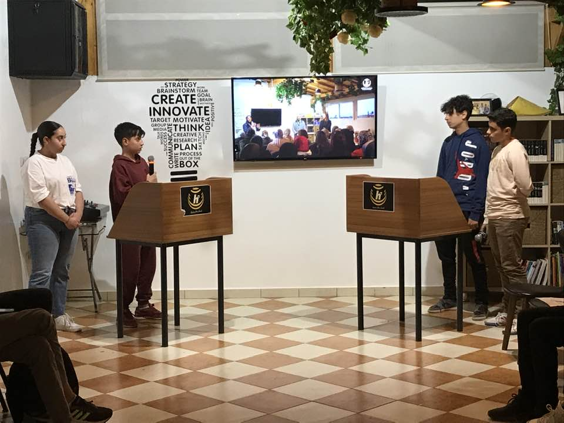
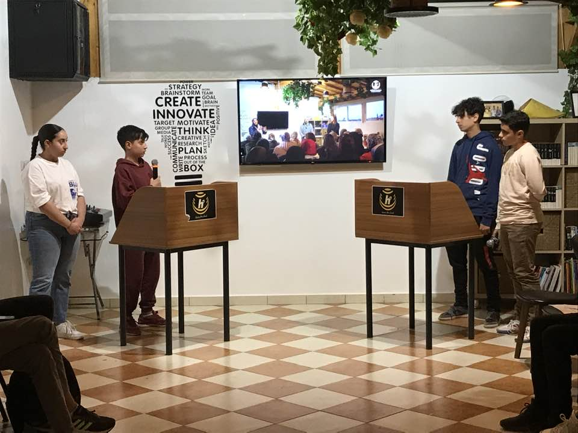
Grâce à la High Up Academy et au Centre Oke, j'ai développé ma capacité à prendre la parole en public et à penser de manière critique à travers diverses expériences académiques et professionnelles, telles que la présentation de travaux de recherche, l'animation d'ateliers et la participation à des débats.
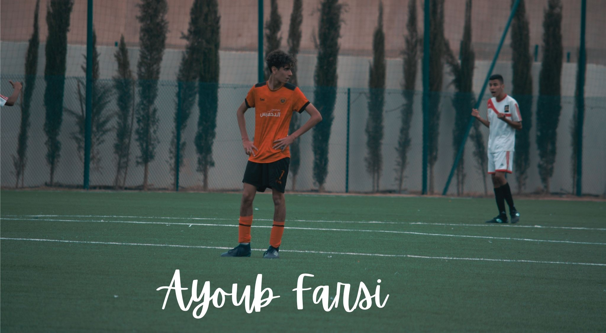
J'ai toujours aimé jouer au football et perfectionner mes compétences sur le terrain. Le football est bien plus qu'un simple jeu pour moi, c'est une passion.

En tant qu'étudiant et footballeur, j'ai remporté de nombreux trophées et médailles pour mes réalisations académiques et sportives. J'ai également eu l'honneur d'échanger des fanions avec d'autres capitaines avant le début de chaque match.
.jpg)
En tant qu'étudiant et footballeur, j'ai maintenu un excellent dossier scolaire, obtenant de très bonnes notes dans mes matières et participant à diverses activités parascolaires.

Mon ami Youness Zerouali et moi avons accompli un magnifique travail bénévole en collectant de l'argent auprès du public et de nous-mêmes pour financer une opération des yeux pour une jeune fille pauvre. Nous avons également fait don de nombreux vêtements à elle et à sa famille.
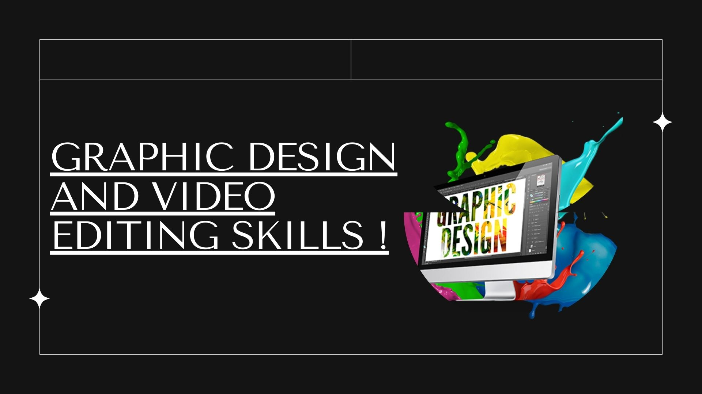
Je suis un étudiant passionné par le design graphique et le montage vidéo. J'ai appris à utiliser divers logiciels et outils pour réaliser de petits projets. J'ai de l'expérience dans la conception et l'édition de logos, d'affiches, de flyers, d'animations, de courts-métrages, et bien plus encore. J'ai également réalisé une superbe vidéo cinématographique pour un restaurant dans la ville de Berkane. J'aime explorer les nouvelles tendances et techniques dans le domaine du design graphique et du montage vidéo, et je m'efforce toujours d'améliorer mes compétences et ma créativité.
Cela présente mes travaux dans différents domaines. J'ai été impliqué dans le football en tant que joueur et fan, et j'ai créé certains travaux qui reflètent ma passion et mes connaissances du jeu. Par exemple, j'ai conçu un logo et un maillot pour un club de football local. En tant qu'étudiant, j'ai également créé des travaux qui démontrent mes compétences académiques et de recherche. J'ai réalisé de nombreuses présentations faisant appel à la pensée critique et aux capacités de raisonnement analytique. En tant que designer graphique, j'ai également créé des œuvres qui illustrent mes compétences artistiques et professionnelles. J'ai travaillé en tant que graphiste freelance pour divers clients, en concevant des logos, des flyers, des affiches, des sites web et en réalisant une publicité pour un restaurant connu de la ville de Berkane.
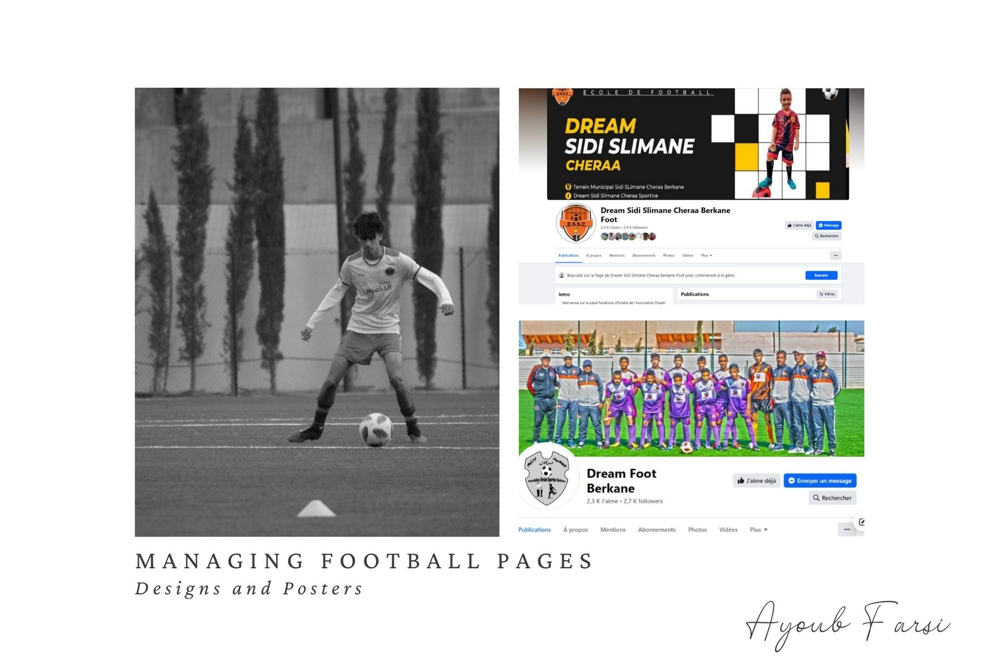
J'ai une passion pour le football et les réseaux sociaux, et j'ai combiné ces deux intérêts en créant et en gérant une page de football complète sur Facebook.

Le montage de clips de football est ma passion. J'aime mettre en valeur les compétences et les réalisations de mon club de football à travers des clips que j'ai montés. Cliquez ici.
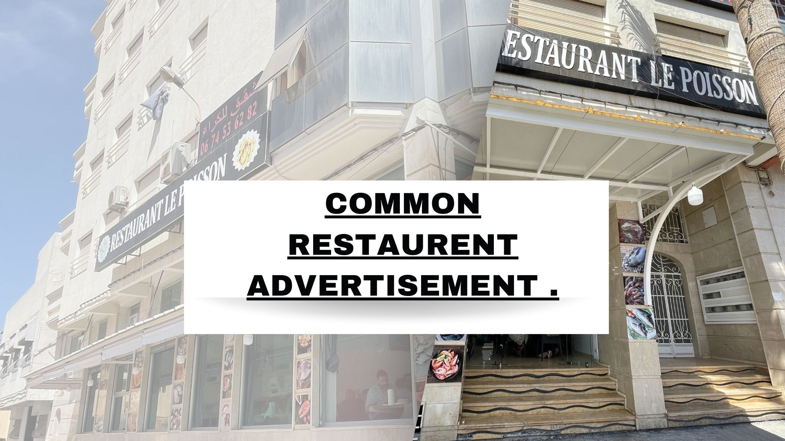
J'ai créé ce site web pour vous présenter mes créations graphiques (intro, bande-annonce, vidéo et publicité photo) pour un restaurant de poissons dans le cadre de mon portfolio. J'espère que vous l'apprécierez et me ferez part de vos commentaires.
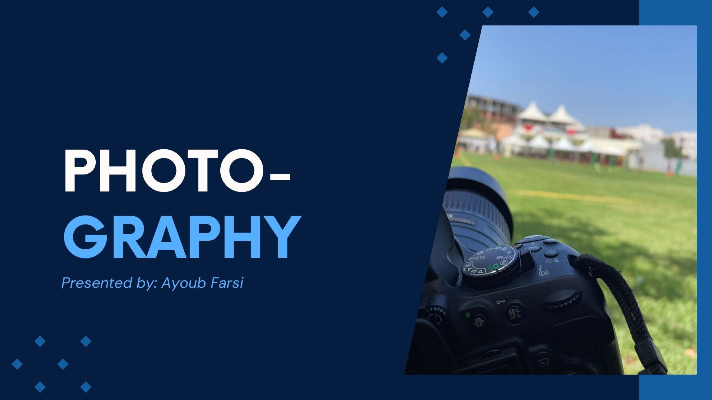
La photographie est bien plus qu'un simple passe-temps pour moi. C'est une manière de capturer le monde qui m'entoure. Elle m'aide également à me détendre, à m'amuser et à apprécier les moments qui comptent. La photographie est ma passion, et j'espère inspirer les autres à travers mon travail.
J'ai eu l'incroyable opportunité de participer à un concours de projets dans mon école, Abi Lkhayr. L'un des projets clés sur lesquels j'ai travaillé s'intitulait "Dossier Moi", et consistait à créer et éditer une présentation vidéo en français, où je me présentais et partageais divers aspects de ma vie. Ce projet nous demandait de parler de nous-mêmes en français, mais j'ai décidé d'adopter une approche créative en intégrant l'intelligence artificielle (IA) dans l'ensemble du projet.
Au lieu de me filmer, j'ai créé un personnage virtuel qui ressemblait et parlait comme moi. Cette approche innovante a ajouté une touche unique au projet et m'a permis d'explorer de nouvelles technologies.
La préparation de ce projet a été à la fois un défi et une récompense. J'ai commencé par réfléchir au contenu que je voulais inclure dans ma vidéo. J'ai pensé à mes loisirs, ma famille, ma vie scolaire et mes aspirations futures. Cette session de réflexion a été cruciale car elle m'a permis d'organiser mes idées et de structurer la présentation de manière cohérente.
Une fois que j'avais un plan clair, j'ai rédigé le script en français. Cette tâche a considérablement amélioré mes compétences linguistiques, car j'ai dû réfléchir au vocabulaire et à la grammaire appropriés à utiliser. Je voulais que ma vidéo soit à la fois captivante et informative, alors j'ai soigneusement formulé chaque phrase pour m'assurer qu'elle transmettait efficacement mon message.
Après avoir finalisé le script, je suis passé à la partie IA du projet. J'ai utilisé un logiciel d'IA pour créer un personnage numérique qui me ressemblait étroitement. J'ai saisi mon script dans le logiciel, qui a généré une vidéo du personnage IA parlant en français avec ma voix et mes gestes. Ce processus a été passionnant et enrichissant, car j'ai appris beaucoup sur la technologie de l'IA et ses applications dans les médias.
Le montage vidéo a été une autre partie excitante du projet. J'ai utilisé un logiciel de montage vidéo pour assembler différents clips, ajouter des transitions et incorporer de la musique de fond afin d'améliorer la présentation globale. Ce processus m'a appris beaucoup sur les aspects techniques de la production vidéo et m'a permis d'exprimer ma créativité.
Lorsque la vidéo a été terminée, je l'ai soumise dans le cadre du concours. J'ai été ravi de recevoir des retours positifs de mon professeur, qui m'a félicité pour le travail accompli. Elle a été particulièrement impressionnée par la créativité et l'innovation d'utiliser l'IA pour créer un avatar au lieu de me filmer moi-même. Elle a apprécié l'effort que j'ai mis dans le projet, tant au niveau du contenu que de l'exécution technique.
Participer au projet "Dossier Moi" a été une expérience enrichissante qui a non seulement amélioré mes compétences en langue française, mais m'a également donné l'occasion de mettre en avant ma créativité et mes compétences techniques. Utiliser l'IA pour créer un avatar a apporté une touche unique et moderne au projet, et c'était extrêmement gratifiant de savoir que mon travail acharné a été reconnu et apprécié par mon professeur.


Je vous écris pour vous fournir un aperçu de ma carrière de footballeur, en mettant particulièrement en avant mes récentes réalisations avec l'Académie RS Berkane.
Je suis un joueur dévoué à l'Académie RS Berkane depuis la majorité de ma vie, perfectionnant mes compétences et évoluant à la fois en tant que joueur et en tant qu'individu. La saison 2023/2024 a été particulièrement significative pour moi, car j'ai eu l'opportunité de mettre en valeur mes capacités avec l'équipe U17.
Tout au long de la saison, j'ai joué en tant que milieu de terrain offensif, arborant le numéro 10. Au cours de 9 matchs, j'ai démontré ma puissance offensive en inscrivant 5 buts et en délivrant 5 passes décisives. Ma performance sur le terrain a non seulement contribué au succès de l'équipe, mais elle a également mis en lumière mon potentiel et mon évolution en tant que joueur.
Pour la saison 2024/2025, je fais désormais partie de l'Académie en catégorie U19, prêt à relever de nouveaux défis et à continuer de progresser dans ma carrière.

Je suis débutant en développement web, mais j'ai déjà créé quelques sites web en utilisant HTML et JavaScript. Mes projets incluent un site web scolaire, un site web de football et mon propre site web portfolio. Je suis enthousiaste à l'idée de continuer à apprendre et à développer mes compétences dans ce domaine.

En tant qu'élèves, nous – Ayoub Farsi, Youness Zerouali, Mohammed Maziane, Rayane Najjari, et Ilyess Siraji – avons collaboré sur un projet scolaire passionnant centré sur le thème de l'Intelligence Artificielle. Notre projet consistait à créer une vidéo, présentée en français, qui explore les différentes facettes et applications de l'IA dans le monde d'aujourd'hui.
L'un des aspects uniques de notre projet a été la manière dont nous avons utilisé l'IA dans le processus de montage vidéo. Au lieu d'apparaître nous-mêmes dans la vidéo, nous avons utilisé la technologie de l'IA pour générer et afficher des personnages ressemblant à chacun de nous. Cette approche innovante a non seulement rendu la vidéo plus captivante, mais elle a également démontré une application pratique de l'IA dans la production médiatique.
En intégrant l'IA à la fois dans le contenu et la production de notre vidéo, nous avons pu mettre en avant la polyvalence et le potentiel de l'intelligence artificielle. Notre projet souligne comment l'IA peut être utilisée de manière créative et efficace dans divers domaines, y compris l'éducation et le divertissement.
Dans l'ensemble, ce projet a été une expérience d'apprentissage précieuse qui nous a permis d'explorer et d'expérimenter avec une technologie de pointe, enrichissant notre compréhension de l'IA et de ses capacités.
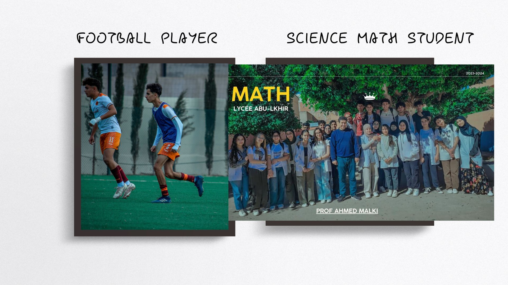
Au cours de l'année académique 2023-2024, j'ai étudié au lycée Abi Lkhayr, où j'ai suivi la filière du Baccalauréat en Sciences Mathématiques. Concilier mes responsabilités académiques avec mon engagement en tant que footballeur à l'Académie RS Berkane a été un véritable défi, mais cela m'a appris l'importance de la discipline et de la gestion du temps.
Tout au long de l'année, j'ai mis beaucoup d'efforts pour exceller dans mes cours de mathématiques et de physique. Ces matières, connues pour leur complexité et leur rigueur, nécessitaient une constance dans l'effort et un travail acharné. J'ai passé d'innombrables heures à étudier, résoudre des problèmes et demander de l'aide à mes enseignants et à mes camarades pour m'assurer de bien comprendre le programme. Mon engagement à maîtriser ces matières impliquait de suivre des séances de tutorat supplémentaires, de participer à des groupes d'étude et d'utiliser des ressources en ligne pour approfondir mes connaissances.
Malgré le programme exigeant de mes entraînements et matchs de football, je suis resté concentré sur mes objectifs académiques. Il y a eu de nombreuses nuits tardives et matins précoces, mais ma détermination n'a jamais faibli. J'ai trouvé des moyens d'intégrer mon emploi du temps de révision avec mes activités sportives, étudiant souvent pendant les pauses et les trajets.
Mes efforts ont porté leurs fruits, car j'ai constaté une nette amélioration de ma compréhension et de mes résultats en mathématiques et en physique. J'ai obtenu de bonnes notes lors des examens et des devoirs, ce qui a non seulement boosté ma confiance, mais a aussi renforcé l'importance de la persévérance et du travail acharné.
Alhamdulillah, ma détermination a été récompensée, et j'ai obtenu la deuxième place de ma classe. Cette réussite a rendu mes parents fiers et a inspiré mes camarades, prouvant qu'avec du travail et de la motivation, il est possible d'exceller tant sur le plan académique qu'athlétique. Mon parcours cette année est un témoignage de la puissance de la résilience et de la quête de l'excellence dans tous les domaines.
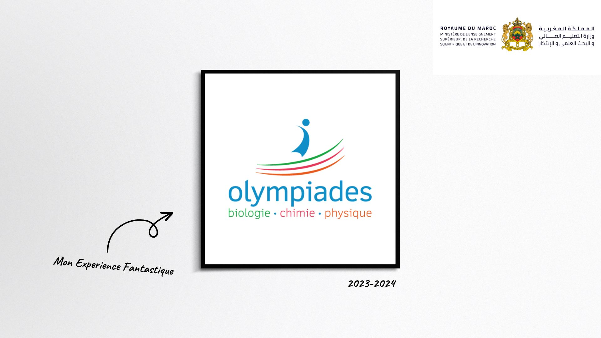
En plus de mes efforts en mathématiques et en physique, j'ai eu l'honneur d'être choisi pour participer aux Olympiades de Chimie pour l'année académique 2023-2024. Cette compétition prestigieuse m'a permis de me challenger davantage et d'appliquer mes connaissances dans un environnement compétitif. Je suis fier de dire que je me suis qualifié aux Olympiades trois fois simultanément, ce qui démontre ma maîtrise et mon engagement envers cette matière.
Mes réussites n'auraient pas été possibles sans le soutien constant et l'aide du directeur du lycée Abi Lkhayr. Ses conseils et son encouragement ont été essentiels à mon succès, et je lui suis profondément reconnaissant pour sa contribution à mon parcours académique.

J'ai réussi le test de français "DELF" à Oujda, en obtenant le niveau A1. J'ai été sélectionné parmi les meilleurs candidats, avec un score de 99 %.

J'ai réussi le test de français "DELF" à Oujda, en obtenant le niveau B2.

J'ai réussi l'examen régional pour l'année académique 2023-2024 en tant qu'élève en Sciences Mathématiques. J'ai été le premier de ma classe 1BACSM2 avec une note de 18,10 à l'examen régional et 18,19 aux évaluations en classe.
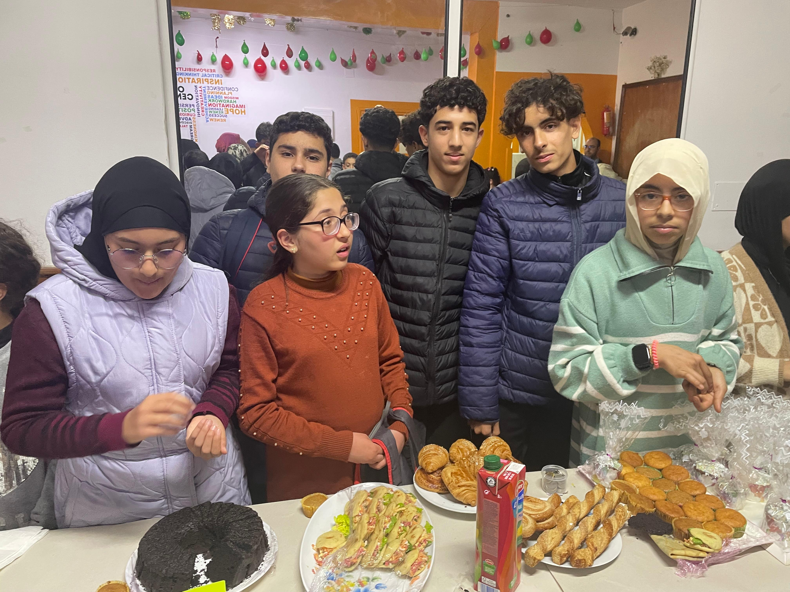
En février 2024, j'ai participé à des activités bénévoles au Centre Oke, où j'ai été impliqué dans la cuisine. Cette initiative avait pour objectif de récolter des fonds pour soutenir les enfants défavorisés. Grâce à nos efforts collectifs, nous avons pu contribuer à une cause importante et avoir un impact positif sur la vie de ceux qui en ont besoin.
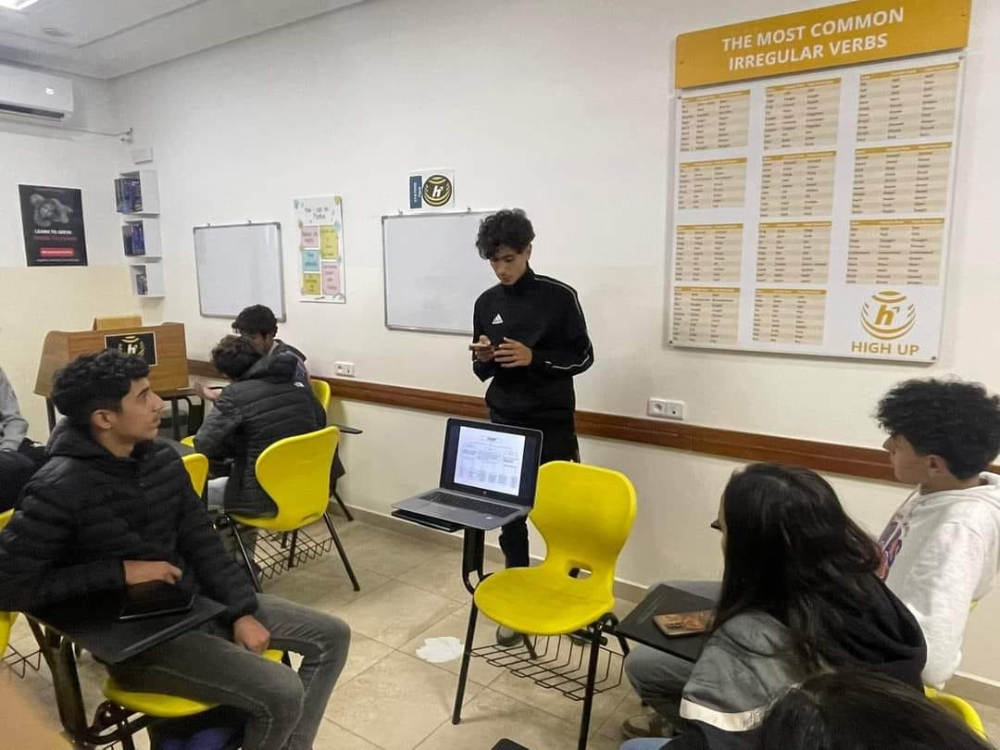
Je suis heureux de vous informer que j'ai présenté avec succès un sujet à High Up Academy. La présentation portait sur la littératie financière, en engageant les étudiants dans une discussion approfondie et une analyse. Ce fut une excellente occasion de partager des connaissances et d'inspirer la réflexion critique parmi les étudiants.
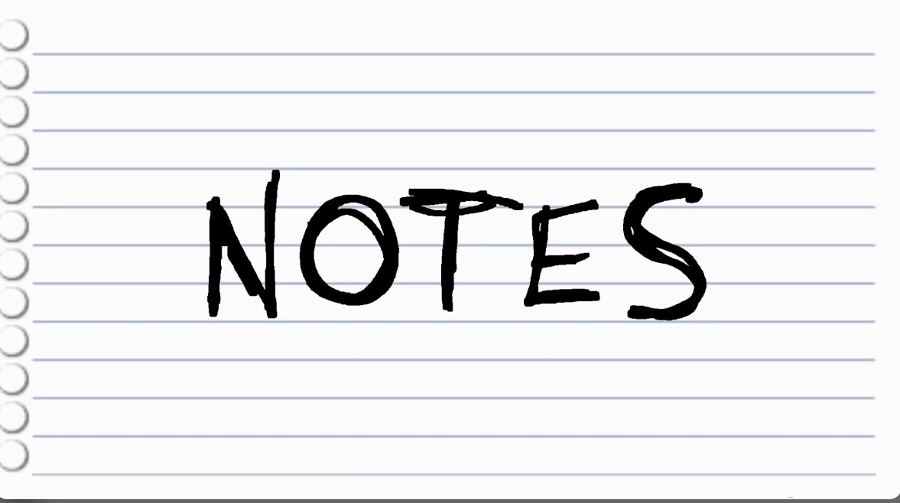
Avec détermination, j'ai obtenu des notes excellentes tout au long de mon parcours au lycée. Voici les relevés de notes de l'ensemble de mes années scolaires.
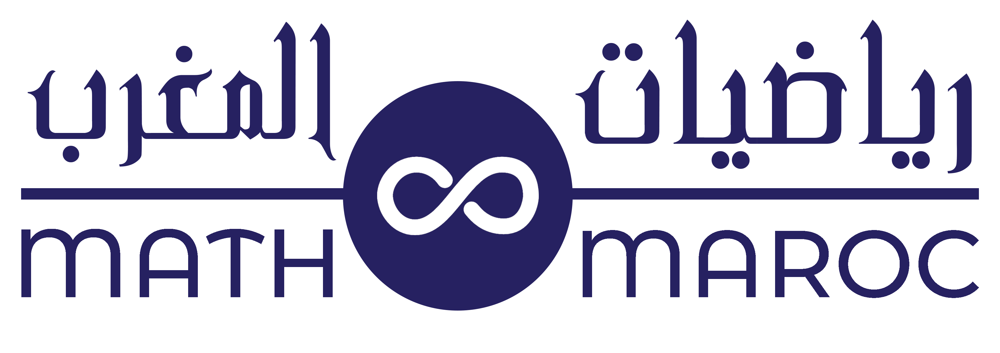
Le MTYM est une compétition de recherche destinée aux lycéens d'orientation scientifique, où les participants, répartis en équipes, explorent des problèmes mathématiques pendant trois mois. Ils présentent ensuite leurs solutions sous forme de débat. Je me suis qualifié pour cette compétition et j'atteindrai l'événement principal en décembre 2024 à l'université Al Akhawayn.